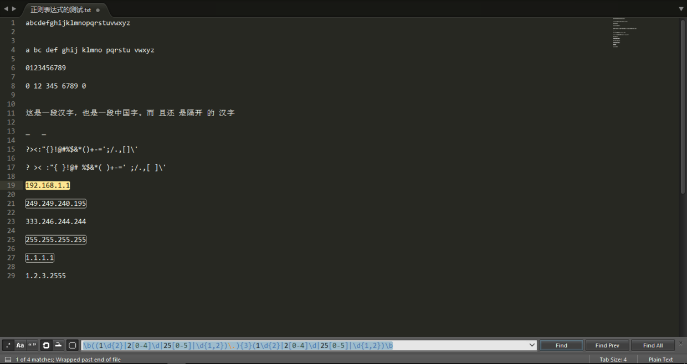

又称正规表示式、正规表示法、正规表达式、规则表达式、常规表示法（英语：Regular Expression，在代码中常简写为regex、regexp或RE），是计算机科学的一个概念。正则表达式使用单个字符串来描述、匹配一系列匹配某个句法规则的字符串。在很多文本编辑器里，正则表达式通常被用来检索、替换那些匹配某个模式的文本。
| 竖直分隔符代表选择。例如 “gray|grey” 可以匹配 grey 或 gray
+：加号代表前面的字符必须至少出现一次。（1次、或多次）。例如，“goo+gle” 可以匹配 google、gooogle、goooogle 等?：问号代表前面的字符最多只可以出现一次。（0次、或1次）。例如，“colou?r” 可以匹配 color 或者 colour*：星号代表前面的字符可以不出现，也可以出现一次或者多次。（0次、或1次、或多次）。例如，“0*42” 可以匹配 42、042、0042、00042 等圆括号可以用来定义操作符的范围和优先度。例如，“gr(a|e)y” 等价于 “gray|grey”，“(grand)?father” 匹配 father 和 grandfather
| 优先级 | 符号 |
|---|---|
| 最高 | \ |
| 高 | ( )、(?: )、( ?= )、[ ] |
| 中 | *、+、?、{n}、{n,}、{m,n} |
| 低 | ^、$、中介字符 |
| 最低 | 丨 |
练习文本：
1 | |
1 | |
结果图：
